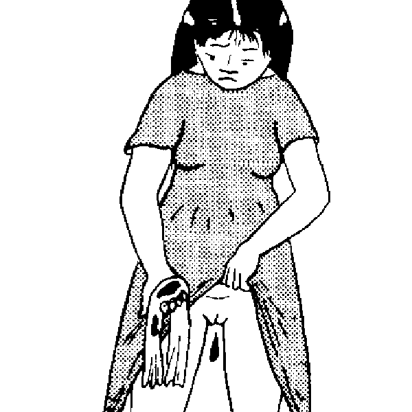
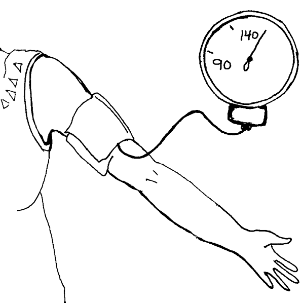

{% extends "templates.jinja/base.page-with-menu.html" %}
{% block id %}Danger_Signs_During_Pregnancy{% endblock %}
		{% block content %}
			<h2 class="hm-content-menuheading">Danger Signs<br>During Pregnancy</h2>
			
			<ul data-role="listview" data-theme="d" class="hm-menu" data-inset="true">
				<li><a href="Bleeding_during_pregnancy.html" rel="external"><span class="hm-menu-linkwrapper hm-menu-linkwrapper-singleline">Bleeding</span></a></li>
				<li><a href="Severe_abdominal_pain_in_pregnancy.html" rel="external"><span class="hm-menu-linkwrapper hm-menu-linkwrapper-singleline">Severe pain in abdomen</span></a></li>
				<li><a href="Pre-eclampsia_during_pregnancy.html" rel="external"><span class="hm-menu-linkwrapper hm-menu-linkwrapper-singleline">High blood pressure</span></a></li>
				<li><a href="Seizures_during_pregnancy.html" rel="external"><span class="hm-menu-linkwrapper hm-menu-linkwrapper-singleline">Seizures/Fits</span></a></li>							
			</ul>
		{% endblock %}
